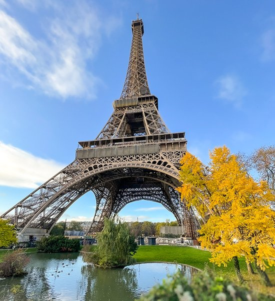

Lugares icónicos de París

Torre Eiffel
Horario: 9:30 - 23:45
Precio: 25€
Un símbolo icónico de París, construido en 1889 para la Exposición Universal.

Museo del Louvre
Horario: 9:00 - 18:00
Precio: 17€
El museo de arte más grande del mundo, hogar de la famosa Mona Lisa.

Catedral de Notre Dame
Horario: 8:00 - 18:45
Precio: Gratis
Una obra maestra de la arquitectura gótica y un lugar emblemático de la ciudad.